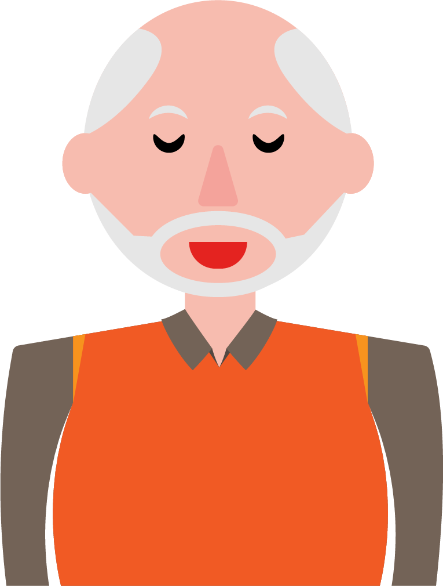

“Hé, ik heb er nog even over nagedacht. De logopediste is langs geweest en ze heeft het me nog een keer rustig uitgelegd. Ik denk dat we inderdaad maar voor sondevoeding moeten gaan. Ik vind het nog steeds erg lastig, want ik wil haar het eetmoment en hiermee een stukje waardigheid eigenlijk niet van haar afnemen. Maar ik wil natuurlijk ook niet dat mijn vrouw zich straks een keer echt goed verslikt en dat het helemaal mis gaat.”

Ga verder